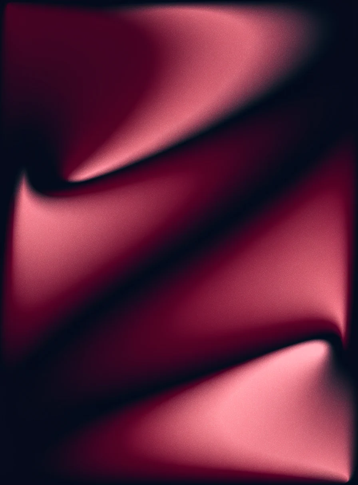

Brand assets
The tmci cli wordmark, the book-and-cursor mark, the app icon, and the colors and type that go with them. Every file here is ready to drop into a landing page, a deck or a README.
Wordmark
The name, always lowercase: "tmci" in Montserrat ExtraBold and "cli" in JetBrains Mono, in maroon. In running text the name is written TMCI CLI.


Mark
An open book with a terminal cursor on its right page. Use it where the full name does not fit: avatars, small headers, footers.


App icon
The mark inside a squircle.


Color
One maroon and a navy ink. Click a color to copy its hex value.
Imagery
One family only: soft gradient fields of maroon, burgundy and rose that fold like silk, with fine grain. Each image has a light and a dark version; use the one that matches the theme around it. Never mix in 3D renders, flat illustrations or stock photos.




To generate more in the same family, prompt for: an abstract soft luminous gradient mesh on a very dark navy-ink base, large glowing fields of deep maroon and burgundy with a touch of rose, flowing like slow folds of silk, fine film grain, no text, no objects. For the light version, ask for a pale warm off-white base.
Type
Montserrat for names and headings, JetBrains Mono for commands and output.
Your courses, from the terminal.
Montserrat for headings and body text, in the muted ink color when it is secondary.
$ tmci --help
Using the logo
- Keep it lowercase.The wordmark is never set in capitals or retyped in another font.
- Give it room.Leave clear space of at least the height of the letter "m" on every side.
- Keep it legible.The wordmark is at least 96 pixels wide. Below that, use the mark.
- Three colors only.Ink, white or maroon. No gradients, shadows or outlines on the logo.
- Do not reshape it.No stretching, rotating or changing the spacing between letters.
- No TMC marks.Never use the TMC Institute shield or wordmark. This project borrows two colors and nothing else.
- Say it is unofficial.TMCI CLI is not a TMC Institute product, and every banner and page says so.